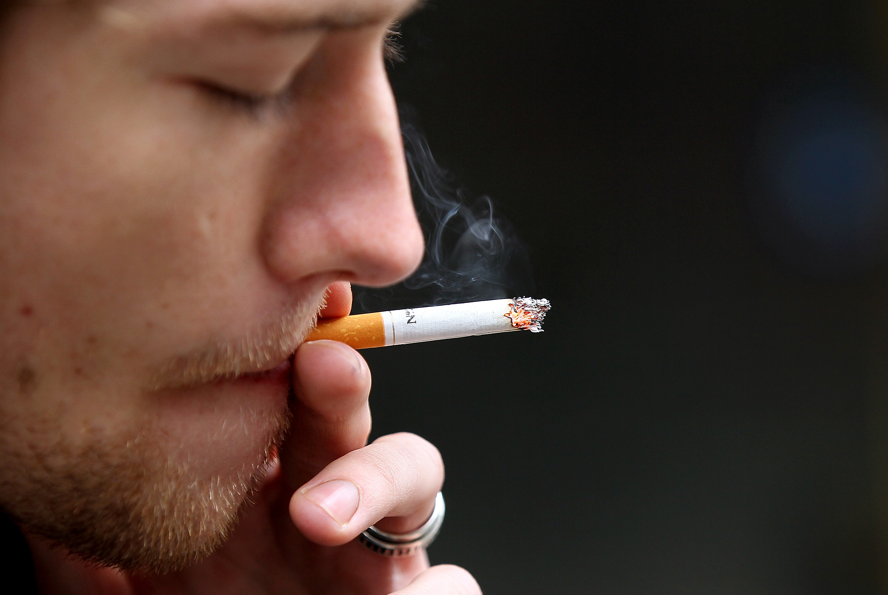
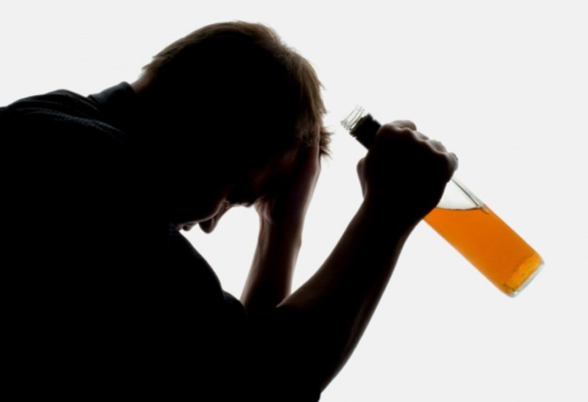
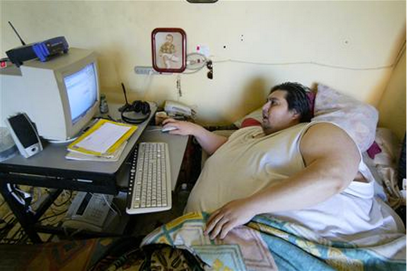

The reality of our world
In the modern world, people are absorbed in everyday cares and have completely forgotten what is most important in life.
A person thinks about how to make money and create a good life for himself, his parents and children. This is all because the role of money in the life of modern man is clearly exaggerated.
Trying to pursue the standards of modern man, we rarely think about our health. After a long and exhausting work a person does not have time to do his health and he simply goes to rest in front of TV or computer, sometimes with adding alcohol and tobacco smoking.
But closer to old age a person begins to understand that his way of life has led to irreversible consequences in his weakened body. More about these items when you click.
Although many of the smokers are aware of the fact that smoking is harmful, but very few people are aware of all the danger emanating from smoking. There are three diseases that begin precisely because of smoking.
- Lung cancer
- Chronical bronchitis
- Emphysema
— Malignant neoplasm of the lung, originating from epithelial tissue of bronchuses of different caliber. Depending on the place of appearance is divided into central, peripheral and massive (mixed).
— prolonged inflammation of the bronchi
— a disease of the respiratory tract, characterized by a pathological expansion of the air spaces of the distal bronchioles, which is accompanied by destructive morphological changes in the alveolar walls.
As a result of smoking or another way of consuming tobacco, one person dies every ten seconds. Every year around three million people die from smoking around the world.
If this percentage of smoking persists in thirty or forty years, mortality will increase to ten million more.
Since the thousand and nine hundred and fiftieth year of the death of sixty-two million people. In the Second World War, fewer people died.
In tobacco and tobacco smoke contains a huge number of chemical compounds. Some of them are carcinogens that can cause cancer.
The greatest harm to smoking causes respiratory and cardiovascular systems. But most importantly, smoking provokes the appearance of cancerous tumors. Cough form in the respiratory system.
Inflammation and narrowing of the small airways. Inflamed cells are more often found in the lungs of smokers. A more severe form of asthma attacks is acquired precisely from smokers.
Respiratory diseases become more frequent. Each cigarette smoked increases blood pressure. Increased heart beats. Cigarette smoke causes narrowing of blood vessels.
The formation of blood clots is also promoted by smoking, because this addiction reduces the time for blood clotting. Because of the carbohydrate oxide, which is contained in tobacco smoke, the amount of hemoglobin that delivers oxygen is reduced.
Expensive cigarettes differ from cheap cigarettes with more pure, tasty and aromatic poisons

Many people know that alcohol is harm to the whole body and the psyche of a person. Harm from alcohol begins with memory impairment and ends with serious illnesses that may not respond to treatment, and in some cases, lead to death. According to recent studies, even small doses of alcohol can lead to some changes in the human brain and other body systems. The harm of alcohol is not only applied to the drinker, but also to the people around him, to the whole society as a whole.
From the use of alcohol may suffer other organs and body systems:
- Vessels and heart
- Urinary system
- Stomach and intestines
- Reproductive system
- Nervous system
After the first intake of alcohol, the molecule is oxidized at a rate of 85-100 mg / kg per hour. If alcohol is consumed often, the oxidation rate rises, resistance to large doses of alcoholic beverages arises.
The first consequence of harm from alcohol is memory impairment even after a small amount of alcohol. The more a dose of alcohol, the more often a person suffers from memory dips.
According to the facts about the dangers of alcohol, one glass of liquor is capable of killing 1000-2000 cells in the brain.
The harm of alcohol on the central nervous system is manifested primarily by the fact that alcohol molecules initially enter nerve cells.
This is due to the high quality of alcohol dissolve fats, which are found most of the time in the envelope of the nerve cell and account for more than 60%. Alcohol penetrates into the neuron and lingers in it, as its cytoplasm contains an elevated water level.
Spirits quickly excite the nervous system, which makes a person cheerful and relaxes.
Over time, alcohol accumulates in nerve cells and starts to slow down their functioning.
Humanity could achieve incredible success if it were more sober.

A sedentary, inactive way of life is what characterizes the modern life of most people. Unfortunately, the person, leading a sedentary lifestyle, puts himself at risk of getting sick. The
Worst of all, negative consequences do not appear immediately, which, in turn, gives the illusion of no harm. But there is harm, and in this article we will consider what a sedentary lifestyle is dangerous, what health problems it leads to. The
The reasons for a sedentary lifestyle:
The reasons for a sedentary lifestyle are obvious. The technosphere is why we are moving less and less.
If earlier a person was constantly on the move, now we are working more and more with information: computers, documents, telephone conversations ... Accordingly, increasingly we are sitting on the pope, and we are less likely to move.
Not only work, now even many entertainment - and those occur in virtual reality, on that side of the screen. Computer games, social networks, movies and series - all this replaces the necessary motor activity for us sitting in front of the screen. And the situation does not even think to improve. On the contrary, the technologies are actively developing in this direction, so that everything will only get worse.
In addition to the technosphere, we are another reason for a sedentary lifestyle. We make a choice in favor of being stuck in front of the screen, no one forces us to do this. These are the things, guys. SIZOZ recommends taking responsibility for one's life in their own hands, not blaming external circumstances, but acting. But this is so, by the way.
Here are diseases caused by a sedentary lifestyle:
- Overweight, obesity
- Diseases of the back and joints
- Decreased visual acuity
- Diseases of the cardiovascular system
- Constipation, hemorrhoids, prostatitis
The only way to maintain health is to eat what you do not want, drink something that you do not love, and do what you do not like.
Why should everyone have an active and healthy lifestyle?
A healthy lifestyle includes a balanced diet, regular exercise and management of your stress. Having worked out and adhering to healthy habits every day gives more than a beautiful appearance - they will also increase the duration and quality of your life. Increase immunity to disease and emotional health. Consider the advantages of a healthy lifestyle.
1.Mental Health.
Mood and cognitive functions play an important role in the quality of life, productivity and healthy interpersonal relationships. According to the American Journal of Psychiatry: Western diet with a high content of saturated fats, refined carbohydrates and alcohol is associated with a higher level of depression and anxiety in women than a diet rich in fruits, vegetables and whole grains.
While more research is needed, a balanced diet that includes a combination of complex carbohydrates, fatty protein fats can be an effective way of protecting mental health.
2.Energy and endurance.
Health is more than the absence of disease. A healthy body rewards you with lifelong service in the form of high levels of energy, strength and longevity. According to Science Daily, low-intensity exercise can reduce fatigue by 65 percent while simultaneously raising energy levels to 20 percent.
Healthy adults should do within 30 minutes of moderate intensity of aerobic exercise, every day is not great exercise. Activity can spread throughout the day and can include small changes such as walking near work or climbing stairs instead of elevators.
3.Beauty and appearance.
Plus of a healthy lifestyle are vital for maintaining youthful, attractive appearance. For example, vitamin A supports the health of the skin, hair and nails, and antioxidants such as vitamin C and selenium helps to prevent damage to free radicals involved in the aging process. A healthy lifestyle, a balanced diet and exercise also help prevent obesity.
Avoid excessive sun exposure, smoking and other potentially harmful habits contributes to a youthful appearance, as these bad habits can accelerate the aging of the skin.
In the issue.
From this article on a healthy lifestyle, one can understand that, no matter how hard, it is always necessary to take care and find time for your body.
It will be hard for some to do this because only strong people can change their way of life. But if you could compare yourself in old age, leading a healthy lifestyle of a person with what you would become, if you continued to live with all your bad habits, then you would see the difference and immediately switched to a healthy image. If you have bad habits and really want to get rid of them, but are not self-confident, then start by a little it will save your body from stress due to a drastic stateChange in lifestyle.
Thank you for reading my article. I hope you have benefited from the reading. Good luck to you!
Your health is the result of self-love.